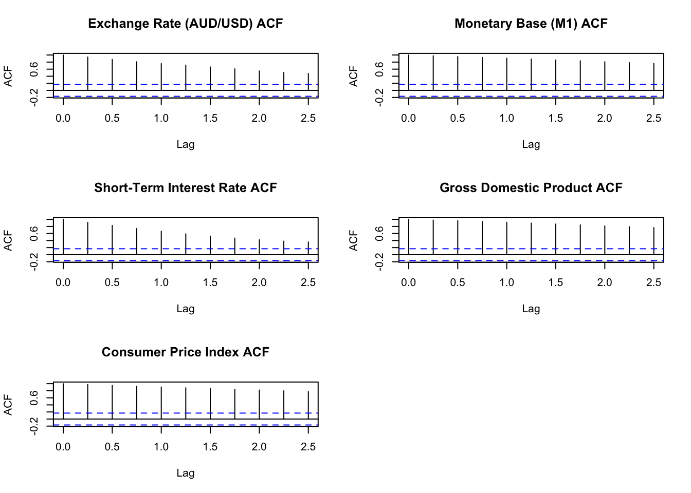

Effects of Monetary Policy Shocks on Exchange Rate: Evidence from Australia
Abstract. This research proposal aim to examine the exchange rate reactions to monetary policy shocks in Australia from 1980 to 2024 using the Bayesian Structural Vector Auto-regression (SVAR) model.
Keywords. R, Monetary policy, exchange rate, SVAR model
Introduction
How monetary policy shocks affect exchange rate? The most well-known study from Dornbusch (1976) documented the overshooting model, which predicts that the monetary expansion would lead to an increase in domestic interest rate and persistence depreciation of exchange rate. However, more economists such as Eichenbaum and Evans (1995) utilized VAR model found that contractionary monetary policy shocks lead to an appreciation in exchange rate, but might be delayed.
The recent study Kim and Lim (2018) further explored that relatively short delay in the effect of contractionary monetary shock to exchange rate appreciation for the UK, Australia, Sweden and Canada.
This paper aims to focus on investigate the effect of monetary shock in a small open economy Australia, applying the Bayesian Structural Vector Auto-regression (SVAR) model. What is the role of monetary policy shock in exchange rate behavior in Australia? Are the effect similar to those large countries? Do we find similar puzzling responses?
Data
The endogenous variables for the SVAR analysis included:
Exchange rate of AUD/USD (ERA): nominal average exchange rate AUD/USD (from RBA)
Monetary base M1 (MB): Monetary base, seasonally adjusted (M1) (from RBA)
Short–term interest rate (Short_R) : Cash rate target (from RBA)
Gross Domestic Product (GDP): Real GDP (quarterly) Gross domestic product, Chain volume measures (from RBA)
Consumer Price Index(CPI): Consumer price index, seasonally adjusted quarterly (from ABS)
The data are collected from the Reserve Bank of Australia (RBA) and Australian Bureau of Statistics (ABS), adjusted in quarterly frequency and from 1990 Q1 to 2023 Q4, including 136 observations.
The first variable is the key variable in the analysis of the research, and the other 4 variables are the key monetary variables to identify the monetary shocks in Australia. All variables data have taken Logarithm except short-term interest rate and plotted in Figure 1: Time-series plots.
Figure 1: Time-series plots
Exchange rate changes are volatile overtime, exhibits peaks and troughs. Monetary base, GDP and CPI all illustrate increasing trend overtime, with some drops during the global financial crisis and during COVID-19 period. Short-term interest rate displays a downward trend since 2000. All time-series plots are restricted in the time period from 1980 Q1 to 2022 Q4.
Table 1: Summary Statistics provides statistics summary of all variables from 1980 Q1 to 2022 Q4.
| variable | N | mean | sd | min | max |
|---|---|---|---|---|---|
| ERA | 172 | 0.75 | 0.12 | 0.49 | 1.07 |
| MB | 172 | 5.64 | 1.08 | 3.71 | 7.43 |
| Short_R | 172 | 4.59 | 2.86 | 0.10 | 16.75 |
| GDP | 172 | 9.82 | 0.17 | 9.49 | 10.04 |
| CPI | 172 | 4.46 | 0.25 | 4.03 | 4.91 |
Table 1: Summary statistics
Preliminary Data Analysis
Figure 2: ACF plots shows that for GDP and CPI have non-zero auto correlations for at least 10 lags, for the ERA, MB, Short_R have non-zero auto correlations for at least 10 lags (shown in 2.5 years).This implies that all series are not white noise and may be non- stationary.We can take a first difference to remove the autocorrelation and ensure stationary for the series and check using ADF test.
Figure 3: PACF plots shows no statistically significant lags except short-term interest rate. Short-term interest rate has some spikes in 4th lag and 5th lag, but not strong.This may suggest that except short-term interest rate, other series are stationary in order 1.

Figure 2: ACF plots
Figure 3: PACF plots
Augmented Dickey-Fuller Test is performed to test for stationarity, the null hypothesis is unit-root non-stationary.A p-value less than 5% implies the null hypothesis is rejected.
Table 2: ADF test shows that for ERA, MB, GDP, we can not reject the null hypothesis at 5% significant level and considered as unit-root non-stationary. Short-term interest rate and CPI can reject the null at 5% significant level and considered as unit-root stationary.
Table 3: ADF test of First Difference shows the first difference of all variables, ERA, MB, GDP can reject the null at 5% significant level and considered as unit-root stationary at first difference condition, they are integrated of order 1.
| Dickey-Fuller | Lag order | p-value | |
|---|---|---|---|
| ERA | -1.98 | 5 | 0.58 |
| MB | -3.13 | 5 | 0.11 |
| Short_R | -3.77 | 5 | 0.02 |
| GDP | -1.36 | 5 | 0.84 |
| CPI | -3.11 | 5 | 0.12 |
Table 2: ADF test
| Dickey-Fuller | Lag order | p-value | |
|---|---|---|---|
| ERA | -4.56 | 5 | 0.01 |
| MB | -3.89 | 5 | 0.02 |
| Short_R | -4.26 | 5 | 0.01 |
| GDP | -5.62 | 5 | 0.01 |
| CPI | -3.87 | 5 | 0.02 |
Table 3: ADF test of First Difference
Methodology
The Structural Form (SF) model of Structural VARs is:
\[\begin{align} B_{0} Y_{t} =b_{0} + \sum_{i=0}^{p} (B_{i}Y_{t-i} )+u_{t} \end{align}\] \[\begin{align} u_{t}|Y_{t-1} \sim iid(0_{N},I_{N} ) \end{align}\]\(Y_{t}\) is \(N \times 1\) matrix of endogenous variable, \(B_{0}\) is \(N \times N\) matrix of contemporaneous relationships, \(u_{t}\) is a \(N \times 1\) vector of conditionally on\(Y_{t-1}\)orthogonal or independent structural shocks.
The Reduced Form (RF) representation is:
\[\begin{align} Y_{t} =\mu_{0} + \sum_{i=0}^{p} (A_{i}Y_{t-i} )+\epsilon_{t} \end{align}\] \[\begin{align} \epsilon_{t}|Y_{t-1} \sim iid(0_{N},\Sigma ) \end{align}\]Sign Restriction Identification
For the model in this research report, \(Y_{t}\) contains 5 variables as:
\[ Y_{t}=\begin{pmatrix}ERA_{t} \\MB_{t} \\{ShortR}_{t} \\GDP_{t} \\CPI_{t}\end{pmatrix} \]
Following the arguments developed in Scholl and Uhlig (2008) , that restrictions should be concerning on the shape but not the size of the exchange rate response,thus sign restriction should be imposed. Adapting the methodology specified in Kim and Lim (2018), the following sign restrictions are imposed on the impulse response to identify the Monetary policy shock.
\[ f(B_0,B_+)=\Theta_0=B= \begin{bmatrix} * & * & * & * & * \\ - & * & * & * & * \\ + & * & * & * & * \\ * & * & * & * & * \\ - & * & * & * & * \\ \end{bmatrix} \] The restriction matrix R is shown as the following:
\[ \textbf{R}=\begin{bmatrix} 0 & 0 & 0 & 0 & 0 \\ 0 & -1 & 0 & 0 & 0 \\ 0 & 0 & 1 & 0 & 0 \\ 0 & 0 & 0 & 0 & 0 \\ 0 & 0 & 0 & 0 & -1 \\ \end{bmatrix} \]
| variable | res |
|---|---|
| ERA | unrestricted |
| MB | - negative |
| Short_R | + positive |
| GDP | unrestricted |
| CPI | - negative |
Estimation Framework
Model specification
The matrix representation is:
\[\begin{align} Y = XA+E \end{align}\] \[\begin{align} E|X\sim MN_{T\times N} (0_{T\times N} ,\Sigma ,I_{T}) \end{align}\]\[ Y =\begin{bmatrix} y_{1'} \\y_{2'} \\. \\. \\. \\y_{T'} \end{bmatrix} A =\begin{bmatrix}\mu_{0'} \\A_{1'} \\.\\.\\.\\A_{p'} \end{bmatrix} x_{t} =\begin{bmatrix}\ 1 \\y_{t-1} \\.\\.\\.\\y_{t-p} \end{bmatrix} X =\begin{bmatrix}\ x_{1'} \\x_{2'} \\.\\.\\.\\x_{T'} \end{bmatrix} E =\begin{bmatrix}\ \epsilon _{1'} \\\epsilon _{2'} \\.\\.\\.\\\epsilon _{T'} \end{bmatrix} \]
The covariance matrix of \(\epsilon_{t}\) can be written as:
\[\begin{align} \Sigma = B_{0} ^{-1} B_{0} ^{-1'} \end{align}\]The Likelihood function would be:
\[ L(A,\Sigma |Y,X) \propto det(\Sigma)^{-T/2}\exp\left \{{-\frac{1}{2}tr[\Sigma ^{-1}(Y-XA)'(Y-XA)]} \right \} \]
The Maximum Likelihood Estimation is:
\[ \hat{A} = (X'X)^{-1}(X'Y) \]
\[ \hat{\Sigma } = \frac{1}{T} (Y-X\hat{A} )'(Y-X\hat{A} ) \]
The Likelihood function can be written as a Normal-Inverse Wishart Distribution:
\[ L(A,\Sigma |Y,X) = NIW_{K\times N} (\hat{A},(X'X)^{-1},(Y-X\hat{A} )'(Y-X\hat{A} ),T-N-K-1) \]
The Natural-Conjugate Prior for the SVARs model is also considered as a Minnesota prior. The Natural-Conjugate Prior Distribution is:
\[ P(A,\Sigma) = P(A|\Sigma) p(\Sigma) \]
\[ \\ A|\Sigma \sim MN_{K\times N} (\underline{A}, \Sigma,\underline{V}) \]
\[ \\ \Sigma\sim IW_{N}( \underline{S}, \underline{v}) \]
Minnesota prior has two main properties:
1.Macroeconomic variables are unit-root non-stationary and are well-characterised by a multivariate random walk process. Thus the prior mean of A is:
\[ \underline{A} = \left [ \mathbf{0}_{N\times1 }\;\; \;I_{N} \;\; \;\mathbf{0}_{N\times(p-1)N } \right ]' \]
2.The Prior Shrinkage is the dispersion of prior distribution around prior mean \(\underline{A}\) is determined by the diagonal element \(\underline{V}\) , thus the prior covariance matrix and diagonal element are:
\[Var[vec(A)] = \Sigma \otimes V\] \[\underline{V}=diag\left ( \left [ k_{2} \; \; \;k_{1}(\mathbf{p} ^{-2}\otimes \imath '_{N} \right ] \right ) \]
for \(\mathbf{p}=[1,2...p]\) and \(\imath =rep(1,N)\)
Baseline Model
Overall, the Full Conditional Posterior can be derived as:
\[ p(A,\Sigma |Y,X) \propto L(A,\Sigma|Y,X)p(A,\Sigma) \]
\[p(A,\Sigma |Y,X) = p(A|Y,X,\Sigma)p(\Sigma|Y,X)\]
\[ p(A|Y,X,\Sigma) = MN_{K\times N } (\overline{A}, \Sigma,\overline{V}) \]
\[ p(\Sigma|Y,X) = IW_{N}(\overline{S},\overline{v}) \]
The main parameters are:
\[ \left\{\begin{matrix}\overline{V}=(X'X+\underline{V}^{-1} )^{-1} \\\overline{A}=\overline{V}(X'Y+\underline{V}^{-1} \underline{A}) \\\overline{v}=T+\underline{v} \\\overline{S}=\underline{S}+Y'Y+\underline{A}'\underline{V}^{-1}\underline{A}-\overline{A}'\overline{V}^{-1}\overline{A}\end{matrix}\right. \]
Estimation Procedure
Step1: Simulate 300 samples of Y with 2 columns indicating 2 policy effect(N=2) using bi-variate Gaussian random walk processes, that is p=1. Thus, K = 1+Np =3. Using sample Y can also generate sample X.
Step2: Use the sample Y and X to compute the estimated posterior parameters \(\overline{V},\overline{A},\overline{v},\overline{S}\) as shown above.
Step3: Draw samples of sample \(\Sigma ^{(s)}\) and \(A ^{(s)}\) using posterior parameters observed in step 2 and iterations S = 1000.
At each iteration \(s\):
Draw \(\Sigma^{(s)}\) from \(\mathcal{IW}_{N}(\overline{S}, \overline{v})\), and take \(\Sigma^{(s)}\) as known
Draw \(A^{(s)}\) from \(\mathcal{MN}_{K\times N}(\overline{A}, \Sigma,\overline{V} )\) by insert \(\Sigma^{(s)}\)
Output is the sample draws from the joint posterior distribution \(\left\{ {A^{(s)}, \Sigma^{(s)}} \right\}^{S}_{s=1}\).
Step4: Compute the initial value of SF parameters using the covariance matrix which implies: \(\tilde{B_{0}} = chol(\Sigma^{(s)-1})\) and \(\tilde{B_{+}} = \tilde{B_{0}} A^{(s)}\)
Step5: Define the restriction matrix R, which is a diagonal matrix that identify the restrictions.
Draw an independent standard normal \(N\times N\) matrix Z and let Z = QR be the QR decomposition of Z with the diagonal of R normalized to be positive, return sample \(Q^{(D)}\) Sample Q from Harr distribution.
Step6:Use matrix \(Q^{(D)}\) to compute parameters \(B_{0} = Q\tilde{B_{0}}\) and \(B_{+} = Q\tilde{B_{+}}\) and the corresponding impulse responses \(\Theta\) that subject to sign restrictions.
To check that \(Rf(B_{+},B_{0})e_{n}>0_{R\times 1}\) for n = 1,…,N.
If these parameters do not satisfy the sign restrictions defined in step5, then return to step5.
Step7: After iterations, if these parameters do satisfy the sign restrictions, return the parameters \((B_{+} ,B_{0} )\)
Estimation Algorithm
Function below is the posterior.draws for step 3 to 4:
# Draw samples of A and sigma
posterior.draws = function(S, posterior_pram){
A.bar <- posterior_pram$A_bar
V.bar <- posterior_pram$V_bar
S.bar <- posterior_pram$S_bar
nu.bar <- posterior_pram$nu_bar
B0.tilde <- array(NA,c(N,N,S))
B1.tilde <- array(NA,c(N,K,S))
L <- t(chol(V.bar))
Sigma.posterior <- rWishart(S, df=nu.bar, Sigma=solve(S.bar))
Sigma.posterior <- apply(Sigma.posterior,3,solve)
Sigma.posterior <- array(Sigma.posterior,c(N,N,S))
A.posterior <- array(rnorm(prod(c(dim(A.bar),S))),c(dim(A.bar),S))
# Compute the initial value of SF parameters
for (s in 1:S){
cholSigma.s <- chol(Sigma.posterior[,,s])
B0.tilde[,,s] <- solve(t(cholSigma.s))
A.posterior[,,s] <- A.bar + L%*%A.posterior[,,s]%*%cholSigma.s
B1.tilde[,,s] <- B0.tilde[,,s]%*%t(A.posterior[,,s])
}
# Sample draws from the joint posterior distribution
return(list(A.posterior = A.posterior,
B0.tilde = B0.tilde,
B1.tilde = B1.tilde,
Sigma.posterior = Sigma.posterior))
}After drawing posterior parameters, we impose sign restrictions to identify the model. Use the orthogonal matrix Q, to identity such that \(B_{0} = Q\tilde{B_{0}}\) and \(B_{+} = Q\tilde{B_{+}}\) satisfy the sign restrictions, as the the algorithm implemented in Fry and Pagan (2011).
Function below is the ImposeSignRestriction for step 5 to 7:
ImposeSignRestriction <- function (restrictions,N,p,S,posterior.draws){
B0.draws = array(NA,c(N,N,S))
B1.draws = array(NA,c(N,(1+N*p),S))
B0.tilde = posterior.draws$B0.tilde
B1.tilde = posterior.draws$B1.tilde
R1 = restrictions
i.vec = c()
S = S
for (s in 1:S){
B0.t = B0.tilde[,,s]
B1.t = B1.tilde[,,s]
sign.restrictions.do.not.hold = TRUE
i=1
while (sign.restrictions.do.not.hold){
Z = matrix(rnorm(N*N),N,N)
QR = qr(Z, tol = 1e-10)
Q = qr.Q(QR,complete=TRUE)
R = qr.R(QR,complete=TRUE)
Q = t(Q %*% diag(sign(diag(R))))
B0 = Q%*%B0.t
B1 = Q%*%B1.t
B0.inv = solve(B0)
sign.restrictions.do.not.hold = !all(diag(B0) > 0)
i=i+1
}
i.vec = c(i.vec,i)
B0.draws[,,s] = B0
B1.draws[,,s] = B1
}
return (list(B0.draws = B0.draws,
B1.draws = B1.draws,
i = i.vec))
}Simulation Result
Table 4: posterior mean of A show the matrix of A suggesting the baseline model estimation using artificial data of 1 lag and constant term is showing zero posterior mean.
Table 5 posterior mean of Sigma shows that covariance matrices \(\Sigma\) are close to an identity matrix.
| constant term | -0.04 | 0.20 |
| lag-1 | 1.00 | -0.01 |
| lag-2 | 0.01 | 0.97 |
Table 4: posterior mean of A
| y1 | 0.96 | -0.07 |
| y2 | -0.07 | 0.94 |
Table 5 posterior mean of Sigma
The simulated result of \(B_{0}\) and \(B_{+}\) are shown in the table below:
As the restrictions is positive diagonal, the result of \(B_{0}\) satisfy the sign restrictions with a positive diagonal as shown in Table 6: posterior mean of B0.
The lag 1 \(B_{1}\) are shown in Table 7: posterior mean of B1, with similar result in y1 and y2 as \(B_{0}\) , also with a positive diagonal, indicating it also satisfy the sign restrictions.
| y1 | 0.65 | 0.02 |
| y2 | 0.08 | 0.66 |
Table 6: posterior mean of B0
| constant | -0.02 | 0.12 |
| y1 | 0.65 | 0.07 |
| y2 | 0.02 | 0.65 |
Table 7: posterior mean of B1
Extension Model With Gamma Distribution
Considering the extension on the \(\Sigma\) , assume the hyper parameter \(\underline{S}\) of the prior distribution for \(\Sigma\) is now adjust as \(\lambda I_{N}\), where the parameter \(\lambda\) following gamma prior distribution, using a hierarchical model.
\[ p(A,\Sigma |Y,X) \propto L(A,\Sigma|Y,X)p(A,\Sigma) \]
\[p(A,\Sigma |Y,X) = p(A|Y,X,\Sigma)p(\Sigma|Y,X,\lambda)\]
\[ \Sigma |\lambda \sim IW(\lambda I_{N}, \underline{\upsilon } ) \]
\[\lambda \sim \mathcal{Gamma}(\underline{s},\underline{a} )\]
The Full Conditional Posterior of \(\lambda\) given \(\Sigma\) can be derived as:
\[ \begin{aligned} p(\lambda |Y,X,\Sigma ) &\propto L(A,\Sigma|Y,X)p(\Sigma,A, \lambda)\\ &\propto L(A,\Sigma|Y,X)p(\Sigma|A, \lambda)p(A)p(\lambda)\\ &\propto p(\Sigma|A,\lambda)p(\lambda) \\ &\propto det(\lambda I_{N})^{\frac{\underline{\upsilon} }{2}} \exp \left \{ -\frac{1}{2}tr\left [ \Sigma ^{-1}\lambda I_{N}\right]\right \}\lambda^{\underline{a}-1}e^{-\frac{\lambda}{\underline{s}} } \\ &\propto (\lambda )^{\frac{\underline{\upsilon}N }{2}+\underline{a}-1} \exp \left \{ -\frac{1}{2}tr\left [ \Sigma ^{-1}\lambda I_{N}\right]-\frac{\lambda}{\underline{s}}\right \} \\ &\propto (\lambda )^{\frac{\underline{\upsilon}N }{2}+\underline{a}-1} \exp \left \{ -\lambda(\frac{1}{2}tr\left [ \Sigma ^{-1} \right]+\frac{1}{\underline{s}})\right \} \end{aligned} \]
As we can show the kernel follows Gamma Distribution as the kernel Gamma distribution is:\[p(x|s,a) \propto x^{a-1}exp \left\{\frac{-(x)}{s} \right\}\]
Hence, the full-conditional posterior distribution of \(\lambda\) follows a Gamma Distribution.
\[ \lambda|Y,X,\Sigma \sim \mathcal{Gamma}(\overline{a},\overline{s}) \]
The main parameters are:
\[ \left\{\begin{matrix} \overline{s}=[\frac{1}{2}tr\left [ \Sigma ^{-1} \right]+\frac{1}{\underline{s}}]^{-1} \\\overline{a}=\frac{\underline{\upsilon}N }{2}+\underline{a}\end{matrix}\right. \]
Gibb Sampler using extension models
Draw samples of sample \(\Sigma ^{(s)}\) , \(\lambda ^{(s)}\) and \(A ^{(s)}\) using posterior parameters.
Initialized \(\lambda ^{(s)}\) as \(\lambda ^{(0)}\) = 2
At each iteration \(s\):
Draw \(\Sigma^{(s)}\) from \(\mathcal{IW}_{N}(\overline{S}, \overline{v})\), and using the initialized \(\lambda ^{(0)}\)
Draw \(\lambda ^{(s)}\) from \(\lambda ^{(s)}\), by insert \(\Sigma^{(s)}\)
Draw \(A^{(s)}\) from \(\mathcal{MN}_{K\times N}(\overline{A}, \Sigma,\overline{V} )\) by insert \(\Sigma^{(s)}\)
Repeat 1 and 2 \(S_{1}+S_{2}\)times.
Discard the first \(S_{1}\) draws that allows the algorithm to converge to the stationary posterior distribution.
Output is the sample draws from the joint posterior distribution \(\left\{ {A^{(s)}, \Sigma^{(s)}} ,\lambda ^{(s)}\right\}^{S_{1}+S_{2}}_{s=S_{1}+1}\).
Estimation Algorithm
Function below is the posterior.draws.exten for Gibb Sampler:
#posterior parameters
posterior.draws.exten = function(S1,S2,X,Y,A,V,nu){
i_N <- diag(N)
#posterior
V_bar.inv <- t(X)%*%X + solve(V)
V_bar <- solve(V_bar.inv)
A_bar <- V_bar%*%(t(X)%*%Y + solve(V)%*%A)
nu_bar <- nrow(Y) + nu
S_total = S1+S2
A.posterior <- array(rnorm(prod(c(dim(A_bar),S_total))),c(dim(A_bar),S_total))
B0.tilde <- array(NA,c(N,N,S_total))
B1.tilde <- array(NA,c(N,K,S_total))
L <- t(chol(V_bar))
Sigma.posterior <-array(NA,c(N,N,S_total))
lambda.posterior = matrix(NA, S_total, 1)
lambda.posterior[1] = 2
for (s in 1:S_total){
S_bar_ext <- lambda.posterior[s]*i_N + t(Y)%*%Y+ t(A)%*%solve(V)%*%A- t(A_bar)%*%V_bar.inv%*%A_bar
Sigma.posterior_d_inv <- rWishart(n=1, df=nu_bar, Sigma=solve(S_bar_ext))[,,1]
Sigma.posterior_draw <- solve(Sigma.posterior_d_inv)
Sigma.posterior[,,s] <- Sigma.posterior_draw
s.posterior <- 1/(0.5*sum(diag(Sigma.posterior_d_inv))+1/s_prior)
a.posterior <- a_prior+(nu_bar*N)/2
if (s!=S_total){
lambda.posterior[s+1] = rgamma(n=1, shape = s.posterior, scale = a.posterior)
}
cholSigma.s <- chol(Sigma.posterior[,,s])
B0.tilde[,,s] <- solve(t(cholSigma.s))
A.posterior[,,s] <- A_bar + L%*%A.posterior[,,s]%*%cholSigma.s
B1.tilde[,,s] <- B0.tilde[,,s]%*%t(A.posterior[,,s])
}
return(list(A.posterior = A.posterior[,,(S1+1):S_total],
B0.tilde = B0.tilde[,,(S1+1):S_total],
B1.tilde = B1.tilde[,,(S1+1):S_total],
Sigma.posterior = Sigma.posterior[,,(S1+1):S_total]
))
}Simulation Result
Table 8: posterior mean of A of extension model shows the posterior mean of matrix of A following the extension model, the constant term is also showing zero posterior mean. Table 9: posterior mean of Sigma of extension model shows that covariance matrices \(\Sigma\) of the extension model also close to an identity matrix.
| constant term | -0.02 | 0.20 |
| lag-1 | 1.00 | -0.01 |
| lag-2 | 0.01 | 0.97 |
Table 8: posterior mean of A of extension model
| y1 | 1.30 | -0.07 |
| y2 | -0.07 | 1.27 |
Table 9: posterior mean of Sigma of extension model
The simulated result of \(B_{0}\) and \(B_{+}\) from the extension model also has conclusion with the baseline model, indicating the sign restrictions imposed are satisfied. With a positive diagonal shown in Table 10: posterior mean of B0 of extension model in the posterior mean of \(B_{0}\) . Also in Table 11: posterior mean of B0 of extension model \(B_{1}\) shows a positive diagonal for y1 and y2, similar value as \(B_{0}\) .
| y1 | 0.58 | 0.02 |
| y2 | 0.06 | 0.58 |
Table 10: posterior mean of B0 of extension model
| constant | -0.01 | 0.12 |
| y1 | 0.57 | 0.06 |
| y2 | 0.03 | 0.57 |
Table 11: posterior mean of B0 of extension model
Extension Model With Stochastic Volatility Heteroskedasticity
Considering the potential heteroskedasticity in the data, to improve in-sample fit of model and improve precision of estimation of data, modelling Conditional heteroskedasticity includes the use of Stochastic Volatility models are adapted. The extension are specified as:
\[ Y = XA+E \]
\[ E|X\sim MN_{T\times N} (0_{T\times N} ,\Sigma ,\Omega) \]
where \(\Omega = diag(\boldsymbol\sigma^{2})\) and \(\boldsymbol\sigma^2 = (\sigma_{1}^2, \sigma_{2}^2...\sigma_{T}^2)'\) follow Stochastic Volatility models:
\[ \sigma^2 = exp(h_t) \]
\[ h_t = h_{t-1}+\eta_{t} \]
\[ \eta_{t} \sim N(0,\sigma_{\eta}^2) \]
The likelihood function under heteroskedasticity is:
\[ L(A,\Sigma |Y,X,\sigma^2) \propto det(diag(\sigma^2))det(\Sigma)^{-T/2}\exp\left \{{-\frac{1}{2}tr[\Sigma ^{-1}(Y-XA)'diag(\sigma^2)^{-1}(Y-XA)]} \right \} \]
The main parameters are:
\[ \left\{\begin{matrix}\overline{V}=(X'diag(\sigma^2)^{-1}X+\underline{V}^{-1} )^{-1} \\\overline{A}=\overline{V}(X'diag(\sigma^2)^{-1}Y+\underline{V}^{-1} \underline{A}) \\\overline{v}=T+\underline{v} \\\overline{S}=\underline{S}+Y'diag(\sigma^2)^{-1}Y+\underline{A}'\underline{V}^{-1}\underline{A}-\overline{A}'\overline{V}^{-1}\overline{A}\end{matrix}\right. \]
Gibb Sampler using extension models
Draw samples of sample \(\Sigma ^{(s)}\) , \(\sigma ^{(s)}\) and \(A ^{(s)}\) using posterior parameters.
Initialized \(\sigma ^{(s)}\) as \(\sigma ^{(0)}\)
At each iteration \(s\):
Draw \(\Sigma^{(s)}\) from \(\mathcal{IW}_{N}(\overline{S}, \overline{v})\), and using the initialized \(\sigma ^{(0)}\)
Draw \(\sigma ^{(s)}\) from using Stochastic Volatility models
Draw \(A^{(s)}\) from \(\mathcal{MN}_{K\times N}(\overline{A}, \Sigma,\overline{V} )\) by insert \(\Sigma^{(s)}\)
Repeat 1 and 2 \(S_{1}+S_{2}\)times.
Discard the first \(S_{1}\) draws that allows the algorithm to converge to the stationary posterior distribution.
Output is the sample draws from the joint posterior distribution \(\left\{ {A^{(s)}, \Sigma^{(s)}} ,\sigma ^{(s)}\right\}^{S_{1}+S_{2}}_{s=S_{1}+1}\) .
Estimation Algorithm
Function below is the SVcommon.Gibbs.iteration for Stochastic Volatility model
SVcommon.Gibbs.iteration = function(aux, priors){
# A single iteration of the Gibbs sampler for the SV component
#
# aux is a list containing:
# Y - a TxN matrix
# X - a TxK matrix
# H - a Tx1 matrix
# h0 - a scalar
# sigma.v2 - a scalar
# s - a Tx1 matrix
# A - a KxN matrix
# Sigma - an NxN matrix
# sigma2 - a Tx1 matrix
#
# priors is a list containing:
# h0.v - a positive scalar
# h0.m - a scalar
# sigmav.s - a positive scalar
# sigmav.nu - a positive scalar
# HH - a TxT matrix
T = dim(aux$Y)[1]
N = dim(aux$Y)[2]
alpha.st = c(1.92677,1.34744,0.73504,0.02266,0-0.85173,-1.97278,-3.46788,-5.55246,-8.68384,-14.65000)
sigma.st = c(0.11265,0.17788,0.26768,0.40611,0.62699,0.98583,1.57469,2.54498,4.16591,7.33342)
pi.st = c(0.00609,0.04775,0.13057,0.20674,0.22715,0.18842,0.12047,0.05591,0.01575,0.00115)
Lambda = solve(chol(aux$Sigma))
Z = rowSums( ( aux$Y - aux$X %*% aux$A ) %*% Lambda ) / sqrt(N)
Y.tilde = as.vector(log((Z + 0.0000001)^2))
Ytilde.alpha = as.matrix(Y.tilde - alpha.st[as.vector(aux$s)])
# sampling initial condition
############################################################
V.h0.bar = 1/((1 / priors$h0.v) + (1 / aux$sigma.v2))
m.h0.bar = V.h0.bar*((priors$h0.m / priors$h0.v) + (aux$H[1] / aux$sigma.v2))
h0.draw = rnorm(1, mean = m.h0.bar, sd = sqrt(V.h0.bar))
aux$h0 = h0.draw
# sampling sigma.v2
############################################################
sigma.v2.s = priors$sigmav.s + sum(c(aux$H[1] - aux$h0, diff(aux$H))^2)
sigma.v2.draw = sigma.v2.s / rchisq(1, priors$sigmav.nu + T)
aux$sigma.v2 = sigma.v2.draw
# sampling auxiliary states
############################################################
Pr.tmp = simplify2array(lapply(1:10,function(x){
dnorm(Y.tilde, mean = as.vector(aux$H + alpha.st[x]), sd = sqrt(sigma.st[x]), log = TRUE) + log(pi.st[x])
}))
Pr = t(apply(Pr.tmp, 1, function(x){exp(x - max(x)) / sum(exp(x - max(x)))}))
s.cum = t(apply(Pr, 1, cumsum))
r = matrix(rep(runif(T), 10), ncol = 10)
ss = apply(s.cum < r, 1, sum) + 1
aux$s = as.matrix(ss)
# sampling log-volatilities using functions for tridiagonal precision matrix
############################################################
Sigma.s.inv = diag(1 / sigma.st[as.vector(aux$s)])
D.inv = Sigma.s.inv + (1 / aux$sigma.v2) * priors$HH
b = as.matrix(Ytilde.alpha / sigma.st[as.vector(aux$s)] + (aux$h0/aux$sigma.v2)*diag(T)[,1])
lead.diag = diag(D.inv)
sub.diag = mgcv::sdiag(D.inv, -1)
D.chol = mgcv::trichol(ld = lead.diag, sd = sub.diag)
D.L = diag(D.chol$ld)
mgcv::sdiag(D.L,-1) = D.chol$sd
x = as.matrix(rnorm(T))
a = forwardsolve(D.L, b)
draw = backsolve(t(D.L), a + x)
aux$H = as.matrix(draw)
aux$sigma2 = as.matrix(exp(draw))
return(aux)
}function posterior.draws.hetero below describe the gibb sampler:
#posterior parameters
posterior.draws.hetero = function(S1,S2,X,Y,A,V,S,nu){
i_N <- diag(N)
nu_bar <- nrow(Y) + nu
S_total = S1+S2
#posterior
A.posterior <- array(NA,c(K,N,S_total))
Sigma.posterior <-array(NA,c(N,N,S_total))
h.posterior <- array(NA,c(nrow(Y),S_total+1))
B0.tilde <- array(NA,c(N,N,S_total))
B1.tilde <- array(NA,c(N,K,S_total))
#initialize
h.posterior[,1] = matrix(1,nrow(Y),1)
#define precision matrix H
HH <- 2*diag(nrow(Y))
mgcv::sdiag(HH,-1) <- -1
mgcv::sdiag(HH,1) <- -1
# define priors for SV model
# h0.v - a positive scalar
# h0.m - a scalar
# sigmav.s - a positive scalar
# sigmav.nu - a positive scalar
# HH - a TxT matrix
priors = list(HH = HH,
h0.m = 0,
h0.v = 1,
sigmav.s = 1,
sigmav.nu= 1)
#Gibb Sampler
for (s in 1:S_total){
#step 1
V_bar.inv <- t(X)%*%diag(1/h.posterior[,s])%*%X + solve(V)
V_bar <- solve(V_bar.inv)
L <- t(chol(V_bar))
A_bar <- V_bar%*%(t(X)%*%diag(1/h.posterior[,s])%*%Y + solve(V)%*%A)
S_bar <- S + t(Y)%*%diag(1/h.posterior[,s])%*%Y + t(A)%*%solve(V)%*%A - t(A_bar)%*%V_bar.inv%*%A_bar
A.posterior <- array(rnorm(prod(c(dim(A_bar),S_total))),c(dim(A_bar),S_total))
Sigma.posterior_d <- rWishart(n=1, df=nu_bar, Sigma=solve(S_bar))
Sigma.posterior_draw <- apply(Sigma.posterior_d ,3,solve)
Sigma.posterior[,,s] <- Sigma.posterior_draw
cholSigma.s <- chol(Sigma.posterior[,,s])
B0.tilde[,,s] <- solve(t(cholSigma.s))
A.posterior[,,s] <- A_bar + L%*%A.posterior[,,s]%*%cholSigma.s
B1.tilde[,,s] <- B0.tilde[,,s]%*%t(A.posterior[,,s])
#step 2
if (s==1){#initialise
aux = list(
Y = Y,
X = X,
H = matrix(1,nrow(Y),1),
h0 = 0,
sigma.v2 = 1,
s = matrix(1,nrow(Y),1),
Sigma = Sigma.posterior[,,s],
A = A.posterior[,,s],
sigma2 = matrix(1,nrow(Y),1)
)}
else{# updating
aux = list(
Y = Y,
X = X,
H = tmp$H,
h0 = tmp$h0,
sigma.v2 = tmp$sigma.v2,
s = tmp$s,
Sigma = Sigma.posterior[,,s],
A = A.posterior[,,s],
sigma2 = tmp$sigma2
)
}
tmp <- SVcommon.Gibbs.iteration(aux,priors)
h.posterior[,s+1] <- as.matrix(tmp$sigma2)
}
return(list(A.posterior = A.posterior[,,(S1+1):S_total],
B0.tilde = B0.tilde[,,(S1+1):S_total],
B1.tilde = B1.tilde[,,(S1+1):S_total],
Sigma.posterior = Sigma.posterior[,,(S1+1):S_total],
h.posterior = h.posterior[,(S1+2):(S_total+1)]
))
}Extended Model with Gamma Distribution and Heteroskedasticity
Under both extension, the model is specified as:
\[ E|X\sim MN_{T\times N} (0_{T\times N} ,\Sigma ,\Omega) \]
where \(\Omega = diag(\boldsymbol\sigma^{2})\) and \(\boldsymbol\sigma^2 = (\sigma_{1}^2, \sigma_{2}^2...\sigma_{T}^2)'\) follow Stochastic Volatility models. The hyper parameter \(\underline{S}\) of the prior distribution for \(\Sigma\) is now adjust as \(\lambda I_{N}\), where the parameter \(\lambda\) following gamma prior distribution, using a hierarchical model.
\[ p(A,\Sigma |Y,X) = L(A,\Sigma|Y,X,\lambda)p(\Sigma|Y,X,\lambda)p(\Omega|Y,X,\sigma^2,h) \]
Gibb Sampler using extension models
Draw samples of sample \(\Sigma ^{(s)}\) , \(\lambda ^{(s)}\) , \(\sigma ^{(s)}\) and \(A ^{(s)}\) using posterior parameters.
Initialized \(\sigma ^{(s)}\) as \(\sigma ^{(0)}\) and \(\lambda ^{(s)}\) as \(\lambda ^{(0)}\) = 2
At each iteration \(s\):
Draw \(\Sigma^{(s)}\) from \(\mathcal{IW}_{N}(\overline{S}, \overline{v})\), and using the initialized \(\sigma ^{(0)}\) and \(\lambda ^{(0)}\)
Draw \(\lambda ^{(s)}\) from \(\lambda ^{(s)}\), by insert \(\Sigma^{(s)}\)
Draw \(\sigma ^{(s)}\) from using Stochastic Volatility models
Draw \(A^{(s)}\) from \(\mathcal{MN}_{K\times N}(\overline{A}, \Sigma,\overline{V} )\) by insert \(\Sigma^{(s)}\)
Repeat 1 and 2 \(S_{1}+S_{2}\)times.
Discard the first \(S_{1}\) draws that allows the algorithm to converge to the stationary posterior distribution.
Output is the sample draws from the joint posterior distribution \(\left\{ {A^{(s)}, \Sigma^{(s)}} ,\lambda ^{(s)},\sigma ^{(s)}\right\}^{S_{1}+S_{2}}_{s=S_{1}+1}\) .
Function below is the posterior.draws.extenhetero for Gibb Sampler:
Empirical Estimation Results
Baseline Model
The Table 12. Posterior Mean of A and Table 13. Posterior Mean of Sigma presented the mean of posterior draws of A and \(\Sigma\) matrices.
| ERA | MB | Short_R | GDP | CPI |
|---|---|---|---|---|
| -0.0027 | 0.0011 | 0.9203 | 0.0530 | 0.0159 |
| 0.9683 | -0.0161 | 0.0957 | 0.0052 | -0.0009 |
| 0.0060 | 0.9957 | -0.0602 | -0.0032 | 0.0015 |
| 0.0020 | -0.0119 | 1.2291 | -0.0005 | 0.0036 |
| 0.0030 | 0.0054 | 0.0975 | 0.9990 | -0.0005 |
| -0.0110 | 0.0037 | -0.1970 | -0.0037 | 0.9974 |
| -0.0112 | -0.0033 | -0.1071 | -0.0015 | -0.0014 |
| 0.0017 | -0.0014 | 0.0016 | -0.0002 | 0.0004 |
| -0.0081 | 0.0030 | -0.1547 | -0.0010 | -0.0018 |
| 0.0006 | 0.0016 | 0.0221 | 0.0001 | 0.0001 |
| -0.0031 | 0.0013 | -0.0670 | -0.0006 | -0.0007 |
| -0.0060 | -0.0013 | -0.0625 | -0.0002 | -0.0002 |
| 0.0006 | -0.0021 | 0.0119 | -0.0004 | 0.0001 |
| 0.0036 | 0.0069 | -0.1373 | 0.0008 | -0.0010 |
| 0.0011 | 0.0007 | -0.0005 | 0.0002 | 0.0001 |
| -0.0008 | 0.0007 | -0.0310 | -0.0002 | -0.0003 |
| -0.0022 | -0.0003 | -0.0399 | -0.0003 | -0.0001 |
| 0.0000 | -0.0014 | -0.0036 | 0.0002 | 0.0000 |
| 0.0040 | -0.0015 | -0.0180 | -0.0010 | -0.0004 |
| 0.0009 | 0.0005 | 0.0004 | 0.0003 | 0.0000 |
| -0.0005 | 0.0004 | -0.0171 | -0.0001 | -0.0002 |
Table 12. Posterior Mean of A
| ERA | MB | Short_R | GDP | CPI |
|---|---|---|---|---|
| 0.0017 | -0.0001 | 0.0045 | 0e+00 | 0e+00 |
| -0.0001 | 0.0006 | -0.0035 | 0e+00 | 0e+00 |
| 0.0045 | -0.0035 | 0.1690 | 1e-04 | 5e-04 |
| 0.0000 | 0.0000 | 0.0001 | 1e-04 | 0e+00 |
| 0.0000 | 0.0000 | 0.0005 | 0e+00 | 0e+00 |
Table 13. Posterior Mean of Sigma
Applying the following Impuse Response Function.
IRF_function = function(S,h,N,B,p,A.posterior,B.posterior){
IRF.posterior = array(NA,c(N,N,h+1,S))
IRF.inf.posterior = array(NA,c(N,N,S))
FEVD.posterior = array(NA,c(N,N,h+1,S))
J = cbind(diag(N),matrix(0,N,N*(p-1)))
for (s in 1:S){
A.bold = rbind(A.posterior[,2:(1+N*p),s],cbind(diag(N*(p-1)),matrix(0,N*(p-1),N)))
IRF.inf.posterior[,,s] = J %*% solve(diag(N*p)-A.bold) %*% t(J) %*% B.posterior[,,s]
A.bold.power = A.bold
for (i in 1:(h+1)){
if (i==1){
IRF.posterior[,,i,s] = B.posterior[,,s]
} else {
IRF.posterior[,,i,s] = J %*% A.bold.power %*% t(J) %*% B.posterior[,,s]
A.bold.power = A.bold.power %*% A.bold
}
for (n in 1:N){
for (nn in 1:N){
FEVD.posterior[n,nn,i,s] = sum(IRF.posterior[n,nn,1:i,s]^2)
}
}
FEVD.posterior[,,i,s] = diag(1/apply(FEVD.posterior[,,i,s],1,sum))%*%FEVD.posterior[,,i,s]
}
}
return(list(
FEVD.posterior = FEVD.posterior,
IRF.posterior = IRF.posterior,
A.bold.power = A.bold.power ,
IRF.inf.posterior = IRF.inf.posterior,
A.bold = A.bold))
}Figure 4. Impulse Response Function of Basic Model shows the Impulse Response Function of the baseline model. With the positive restriction on short term interest rate and negative restriction on CPI and monetary base, we can not observe significant effect in exchange rate.There are slightly negative effect on GDP and slightly positive effect on exchange rate, but the effect is not statistically significant in 68% confidence interval.

Figure 4. Impulse Response Function of Basic Model
Extension Model With Gamma Distribution
The Table 14. Posterior Mean of A in extension model and Table 15. Posterior Mean of Sigma in extension model presented the mean of posterior draws of A and \(\Sigma\) matrices for extension model.
| ERA | MB | Short_R | GDP | CPI |
|---|---|---|---|---|
| -0.0079 | -0.0008 | 0.8439 | 0.0518 | 0.0155 |
| 0.9688 | -0.0152 | 0.1034 | 0.0053 | -0.0007 |
| 0.0058 | 0.9957 | -0.0536 | -0.0038 | 0.0015 |
| 0.0022 | -0.0122 | 1.2310 | -0.0005 | 0.0036 |
| 0.0040 | 0.0058 | 0.0912 | 0.9994 | -0.0005 |
| -0.0105 | 0.0039 | -0.1937 | -0.0033 | 0.9980 |
| -0.0115 | -0.0037 | -0.1084 | -0.0014 | -0.0015 |
| 0.0015 | -0.0019 | -0.0028 | 0.0001 | 0.0006 |
| -0.0084 | 0.0035 | -0.1569 | -0.0010 | -0.0016 |
| 0.0002 | 0.0014 | 0.0305 | 0.0000 | 0.0000 |
| -0.0024 | 0.0013 | -0.0659 | -0.0006 | -0.0006 |
| -0.0064 | -0.0013 | -0.0629 | -0.0003 | -0.0002 |
| 0.0007 | -0.0020 | 0.0092 | -0.0002 | -0.0001 |
| 0.0036 | 0.0067 | -0.1363 | 0.0008 | -0.0012 |
| 0.0009 | 0.0005 | 0.0017 | 0.0002 | 0.0000 |
| -0.0007 | 0.0008 | -0.0269 | -0.0005 | -0.0003 |
| -0.0024 | -0.0004 | -0.0404 | -0.0003 | -0.0001 |
| 0.0000 | -0.0012 | -0.0033 | 0.0002 | 0.0000 |
| 0.0041 | -0.0015 | -0.0180 | -0.0010 | -0.0003 |
| 0.0007 | 0.0007 | -0.0001 | 0.0002 | -0.0002 |
| -0.0007 | 0.0002 | -0.0177 | 0.0000 | -0.0002 |
Table 14. Posterior Mean of A in extension model
| ERA | MB | Short_R | GDP | CPI |
|---|---|---|---|---|
| 0.0027 | -0.0002 | 0.0045 | 0.0001 | 0.0000 |
| -0.0002 | 0.0020 | -0.0035 | 0.0000 | 0.0002 |
| 0.0045 | -0.0035 | 0.1693 | 0.0001 | 0.0004 |
| 0.0001 | 0.0000 | 0.0001 | 0.0015 | 0.0003 |
| 0.0000 | 0.0002 | 0.0004 | 0.0003 | 0.0013 |
Table 15. Posterior Mean of Sigma in extension model
Figure 5. Impulse Response Function Extension Model shows the Impulse Response Function of the extension model. With the positive restriction on short term interest rate and negative restriction on CPI and monetary base, we still can not observe significant effect in exchange rate.There are slightly negative effect on GDP and slightly positive effect on exchange rate, but the effect is not statistically significant in 68% confidence interval .

Figure 5. Impulse Response Function Extension Model
Extension Model With Stochastic Volatility Heteroskedasticity
The Table 16. Posterior Mean of A in heteroskedasiticity modeland Table 17. Posterior Mean of Sigma in heteroskedasiticity modelpresented the mean of posterior draws of A and \(\Sigma\) matrices for extension model.
| ERA | MB | Short_R | GDP | CPI |
|---|---|---|---|---|
| -0.0220 | -0.0187 | 0.0115 | 0.0174 | 0.0179 |
| -0.0098 | -0.0168 | -0.0190 | -0.0288 | -0.0171 |
| 0.0240 | -0.0020 | -0.0010 | -0.0048 | 0.0148 |
| 0.0136 | -0.0069 | -0.0141 | -0.0017 | 0.0020 |
| -0.0075 | -0.0234 | 0.0170 | -0.0079 | -0.0003 |
| -0.0094 | -0.0155 | 0.0073 | -0.0086 | 0.0171 |
| 0.0104 | 0.0060 | 0.0036 | -0.0056 | -0.0070 |
| -0.0023 | 0.0129 | -0.0019 | -0.0016 | -0.0185 |
| -0.0012 | 0.0101 | -0.0149 | 0.0032 | 0.0048 |
| 0.0110 | -0.0119 | 0.0237 | -0.0173 | 0.0030 |
| 0.0025 | 0.0126 | -0.0270 | -0.0177 | -0.0027 |
| 0.0052 | 0.0090 | 0.0266 | 0.0193 | 0.0289 |
| -0.0004 | -0.0003 | -0.0055 | -0.0126 | 0.0105 |
| 0.0092 | -0.0138 | 0.0144 | -0.0010 | 0.0076 |
| 0.0178 | 0.0000 | 0.0098 | -0.0102 | -0.0124 |
| 0.0097 | 0.0087 | 0.0129 | -0.0055 | 0.0067 |
| 0.0200 | -0.0018 | 0.0138 | 0.0170 | 0.0030 |
| 0.0005 | 0.0197 | -0.0150 | 0.0038 | 0.0078 |
| -0.0082 | -0.0066 | -0.0018 | -0.0069 | -0.0060 |
| -0.0023 | 0.0049 | 0.0028 | -0.0168 | 0.0141 |
| 0.0022 | -0.0001 | -0.0052 | -0.0228 | 0.0282 |
Table 16. Posterior Mean of A in heteroskedasiticity model
| ERA | MB | Short_R | GDP | CPI |
|---|---|---|---|---|
| 1e-04 | 0e+00 | 0.0000 | 0 | 0 |
| 0e+00 | 0e+00 | -0.0001 | 0 | 0 |
| 0e+00 | -1e-04 | 0.0052 | 0 | 0 |
| 0e+00 | 0e+00 | 0.0000 | 0 | 0 |
| 0e+00 | 0e+00 | 0.0000 | 0 | 0 |
Table 17. Posterior Mean of Sigma in heteroskedasiticity model
Figure 6. Impulse response result using heteroskedasiticity model shows the Impulse Response Function of the heteroskedasticity model. With the positive restriction on short term interest rate and negative restriction on CPI and monetary base, the results is similar using baseline model, as the estimated posterior mean of A and \(\Sigma\) are similar.
However, we still can not observe significant effect in exchange rate.There are slightly negative effect on GDP and slightly positive effect on exchange rate, but the effect is not statistically significant in 68% confidence interval. By using Stochastic Volatility heteroskedasticity , the resulting plot is flatter and confidence interval is wider compared to baseline model. This can be explained as to capture strong heteroskedasticity in forecasting usually required a large sample, but the sample we used in this paper only has 132 lags, which is not sufficient enough to produce better result using Stochastic Volatility heteroskedasticity model.

Figure 6. Impulse response result using heteroskedasiticity model
Extended Model with Gamma Distribution and Heteroskedasticity
The Table 18. Posterior Mean of A in extended model and Table 19. Posterior Mean of Sigma in extended model presented the mean of posterior draws of A and \(\Sigma\) matrices for extension model.
| ERA | MB | Short_R | GDP | CPI |
|---|---|---|---|---|
| 0.0076 | 0.0248 | 0.0161 | -0.0188 | -0.0171 |
| -0.0083 | -0.0205 | -0.0279 | -0.0081 | -0.0136 |
| 0.0037 | -0.0006 | -0.0026 | -0.0030 | -0.0080 |
| -0.0158 | 0.0054 | -0.0038 | -0.0004 | 0.0109 |
| -0.0043 | 0.0166 | -0.0035 | 0.0184 | -0.0127 |
| -0.0174 | -0.0041 | -0.0152 | -0.0116 | -0.0045 |
| -0.0269 | 0.0140 | -0.0143 | 0.0007 | 0.0053 |
| 0.0046 | -0.0009 | 0.0051 | 0.0060 | -0.0004 |
| 0.0174 | -0.0300 | 0.0035 | 0.0034 | -0.0091 |
| 0.0035 | -0.0387 | -0.0182 | -0.0035 | -0.0044 |
| -0.0097 | -0.0040 | -0.0028 | 0.0073 | -0.0136 |
| -0.0212 | 0.0142 | -0.0026 | -0.0082 | 0.0189 |
| -0.0295 | 0.0169 | 0.0091 | -0.0066 | 0.0108 |
| -0.0141 | 0.0064 | 0.0168 | -0.0063 | 0.0138 |
| 0.0076 | -0.0130 | -0.0045 | 0.0107 | -0.0064 |
| -0.0049 | 0.0028 | -0.0030 | 0.0129 | -0.0171 |
| 0.0021 | 0.0041 | 0.0115 | 0.0057 | -0.0188 |
| 0.0006 | -0.0138 | -0.0140 | -0.0100 | 0.0026 |
| 0.0102 | -0.0075 | -0.0055 | 0.0050 | 0.0074 |
| -0.0069 | -0.0103 | -0.0243 | -0.0097 | 0.0008 |
| 0.0104 | -0.0134 | -0.0026 | 0.0143 | -0.0066 |
Table 18. Posterior Mean of A in extended model
| ERA | MB | Short_R | GDP | CPI |
|---|---|---|---|---|
| 0 | 0 | 0 | 0 | 0 |
| 0 | 0 | 0 | 0 | 0 |
| 0 | 0 | 0 | 0 | 0 |
| 0 | 0 | 0 | 0 | 0 |
| 0 | 0 | 0 | 0 | 0 |
Table 19. Posterior Mean of Sigma in extended model
Figure 7. Results of extended model shows the Impulse Response Function of the heteroskedasticity model. With the positive restriction on short term interest rate and negative restriction on CPI and monetary base, the results is similar using baseline model, as the estimated posterior mean of A and \(\Sigma\) are similar.
However, we still can not observe significant effect in exchange rate for statistically significant in 68% confidence interval. By using Stochastic Volatility heteroskedasticity with extension with Gamma distribution, the resulting plot is flatter and confidence interval is wider compared to initial extension model. The reason behind the result could be explained, to capture strong heteroskedasticity in forecasting usually required a large sample, but the sample we used in this paper only has 132 lags, which is not sufficient enough to produce better result using Stochastic Volatility heteroskedasticity model. Futhermore, potential other correlation with Stochastic Volatility heteroskedasticity and the extension with Gamma distribution that has not observed in the analysis.
Figure 7. Results of extended model
References
Dornbusch, Rudiger. 1976. “Expectations and Exchange Rate Dynamics.” Journal of Political Economy 84 (6): 1161–76. https://doi.org/10.1086/260506.
Eichenbaum, M., and C. L. Evans. 1995. “Some Empirical Evidence on the Effects of Shocks to Monetary Policy on Exchange Rates.” The Quarterly Journal of Economics 110 (4): 975–1009. https://doi.org/10.2307/2946646.
Fry, Renée, and Adrian Pagan. 2011. “Sign Restrictions in Structural Vector Autoregressions: A Critical Review.” Journal of Economic Literature 49 (4): 938–60. https://doi.org/10.1257/jel.49.4.938.
Kim, Soyoung, and Kuntae Lim. 2018. “Effects of Monetary Policy Shocks on Exchange Rate in Small Open Economies.” Journal of Macroeconomics 56 (June): 324–39. https://doi.org/10.1016/j.jmacro.2018.04.008.
Scholl, Almuth, and Harald Uhlig. 2008. “New Evidence on the Puzzles: Results from Agnostic Identification on Monetary Policy and Exchange Rates.” Journal of International Economics 76 (1): 1–13. https://doi.org/10.1016/j.jinteco.2008.02.005.